As an integrated software suite for neuroimaging data processing, FreeROI not only provides the user-friendly pipeline for defining ROI, but also many related tools for image processing, such as smoothing, binarization, and image segmentation.
All tools could be classified into several categories based on their utility, and placed in the menu bar.
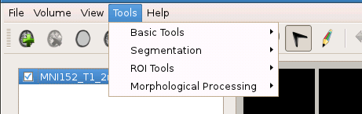Also, many common tools are also available in the Tools Table in the lower-left of the window.
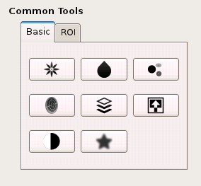In FreeROI, the images could be binarized, smoothed, or masked by another image by a few clicks, liberating users from complex command lines.
Binarization
An image could be binarized with this tool. A threshold should be given, the voxel, which value is not less than threshold, would be assigned as 1, otherwise, assigned as 0.
To binarize an image, first select this image in the image list (left click the image, this image would be highlighted). Then, open the binarization tool from the tool bar or Basic Tools table on the lower-left of the window. Specify the threshold value and output volume name, a binarized image would be generated after running the tool.
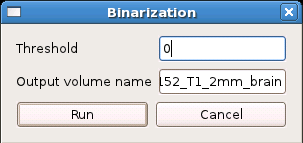Smoothing
A Gaussian filter could be used for image smoothing. The parameter sigma - standard deviation for Gaussian kernel - should be specified in voxel units first.
To smooth an image, first select this image in the image list (left click the image). Then open the smoothing tool, and specify the sigma of the Gaussian kernel as well as the output volume name, a smoothed image would be generated.
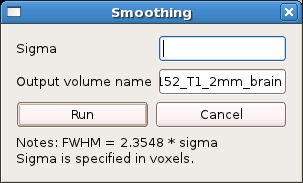Note: The relationship between the full width at half maximum (FWHM) and sigma could be derived as FWHM = 2.3548 * sigma.
Inversion
In fMRI activation image, the negative activation is usually also concerned by reserchers, yet no thresholding process for negative value is implemented in FreeROI. To facilitate users extract regions with negative value, the image could be inverted by multiplying with -1 first.
After the source image is selected in the image list, click the inverse button, an inversed image would be generated directly.
Intersection
An image could be masked by another image using intersection tool. In this tool, the “mask” image is selected as one of the loaded image, and binarized after thresholding with the lower-bound value for display. The output volume name is specified by users.
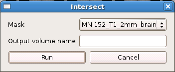Local Maxima Detection
This tool is used for extract local maxima from an image. The local maxima could be used for defining ROIs with regular shape.
To extract the local maxima from an image, a least distance of local maximum is needed. If the distance between two local maximum is less than this lower bound, the smaller local maxima would be discarded.
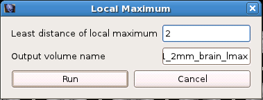Extract mean time course
After a ROI/mask is defined, this tool could be used to extract mean time course of this ROI from an 3D/4D image.
First, the source image should be selected from the image list. Then, open this tool from tool bar, and select a loaded image as the mask. The mean time course of this mask extracted from the source image would be exported to a csv file.
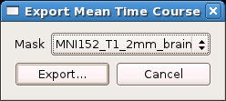The image could be edited in voxel or ROI unit. Click the pen icon on the tool bar, the Image Edit Dialog would open.
As the goal of FreeROI is to generate or label ROIs, the value assigned to each voxel is specified by a label list. Each label list consists of many different value and the corresponding label name.
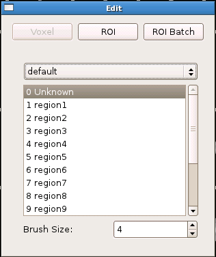Select one label from ths label list, you can assign the corresponding value to a voxel or ROI.
Also, the label list could be customized by editing a label config file. A sample is shown here.
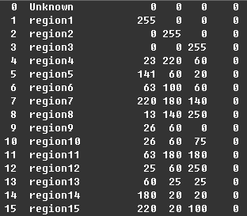This file containts several rows and six columns. Each row represents a ROI. Each column is separated by the blanks. The 1st column records the value of the region, the 2nd records the name of the region. The other four columns represent the R, G, B, and transparent degree while display this region in an image.
Place this file into the directory data/labelconfig in FreeROI directory, the program would load it automatically.
Voxel Edit
Select the image which you want to edit from the image list, and choose a label from label list, then you can modify the value of voxel freely by drawing on the image. In addition, you could also set the number of voxels selected one time by setting the Brush Size.
ROI Edit
Similar to the Voxel Edit, this tool could help you modify the value in ROI unit by a single click on the image.
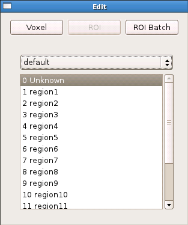ROI Batch
In ROI batch, you can modify several ROIs one time, and store the modified ROI into a new image.
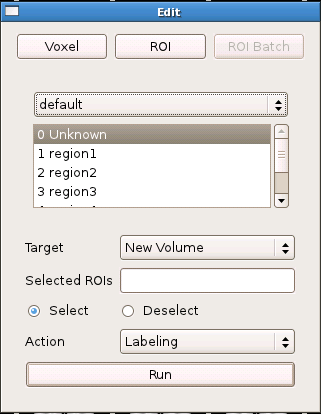
As the initial step for defining ROI semi-automatically, an image could be divided into several subregions each with a specific label using image segmentation algorithm. In FreeROI, three segmentation methods could be used, including cluster detection, watershed, and region growing.
Cluster Detection
After a voxel-wise analysis, researchers usually only concern the regions which show a significant effect of experiment manipulation. Thus, after a threshold processing, the image would consist of many separated clusters which defined by a set of continous voxels. With the cluster detection approach, each cluster could be extracted out and labeled with a distinguishable marker.
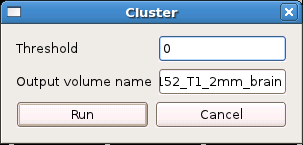A threshold value should be specified in this tool.
Watershed
Watershed algorithm could divide an image following the topographical information in the image. Specifically, it treats voxel value as a local topography (elevation). The algorithm finds local minima and “grow” regions around these minima by incorporating neighboring voxels in increasing order of voxel value, until basins attributed to different markers meet on watershed lines. In addition, to segment an fMRI activation image, for example, the image could be inverted (multiplied with -1) before segmentation. The segmented image consists of several regions each with a activation peak, also an activation cluster which has more than one local maxima would be divided into several sub-regions which are separated with watershed lines.
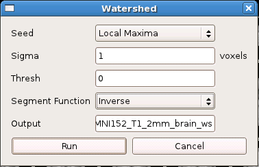Several parameters should be specified in this tool. First, the local minima could be detected automatically, or specified an image by user. Second, before segementation, the image could be smoothed to reduce noise effect. Third, a threshold value is used to control the extent of the subregions. Fourth, the image could be segmented following different strategies, this option is selected in the Segment Function.
Region Growing
Region growing is a simple voxel(pixel)-based image segmentation method. This approach examines neighboring voxels of initial “seed point” and determines whether the voxel neighbors should be added to the region. The preocess is iterated on, in the same manner as general data clustering algorithm.
The first step in region growing is to select a seed point. The initial region begins as the exact location of this seed. The region is then grown from the seed point to adjacent points depending on a similarity constraint. Also a region size is required from the user. The growing process is continued until the region size reach this upper-bound.
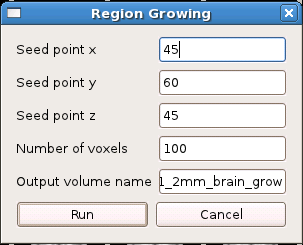This set of tools are designed for ROI generation with regular shape, merging, edge detection, and several other utility.
Merging
When you need to pool many ROIs stored in different images together, this tool could help you.
Open the merging tool, and select the loaded images which you want to be merged together, a merged image would be generated.
Edge Detection
This tool is used to extract the edge of the ROI. It’s very useful when you need to display the ROI as a enclosed boundary.
A sample is presented. In the left image, a ROI is displayed in blue, its edge is detected with this tool, and displayed in green color in the right.
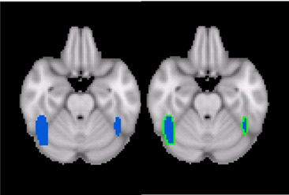Regular ROI
Provided an image which contains many seed points, this tool could generate many ROIs with regular shape (cube or sphere) using these seeds as centers. The generated regular ROIs would be stored in a new image.
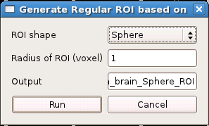ROI to Surface
It’s an experimental tool which used to map a ROI to the nearest surface of white/gray matter. When you want to tract a fiber based on DTI data, this procedure could improve the quality of fiber tracting.
Morphological image processing is a collection of non-linear operations related to the shape or morphology of features in an image. According to Wikipedia , morphological operations rely only on the relative ordering of voxel/pixel values, not on their numerical values, and therefore are especially suited to the processing of binary images. Morphological operations can also be applied to greyscale images such that their light transfer functions are unknown and therefore their absolute voxel/pixel values are of no or minor interest.